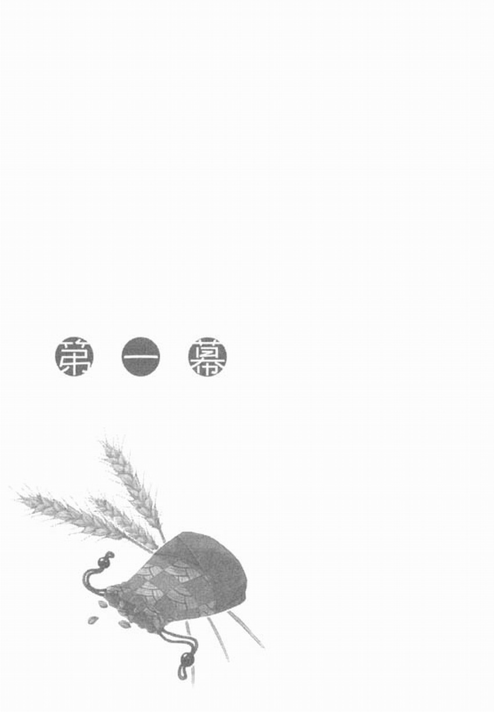
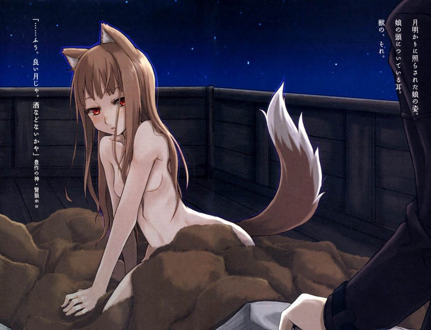

「這是最後一件了吧？」
「嗯，這裡確實有……七十件。多謝惠顧。」
「不，我們才要謝謝你呢。只有羅倫斯先生你願意到這深山裡來，真是幫了我們大忙。」
「不過，我也因此拿到上等的皮草啊，我會再來的。」
結束一如往常的對話，離開深山裡的村落已過了五個小時。太陽升起後就立刻動身，下山來到這片草原時已過了中午。
這天的天氣晴朗，沒有半點風，是個適合坐在馬車上，悠哉橫越草原的日子。因為這陣子的天氣寒冷，原以為冬天就快到了，現在卻一點兒也感覺不到。
成為自力更生的旅行商人，隻身行商至今已有七個年頭，今年二十五歲的羅倫斯坐在馬車駕座上，泰然自若地打著呵欠。
這裡幾乎沒有高大的草木會阻礙視線，眼前景色一望無際，也因此可以看清遠方的景象。在視野最遠處，可看到一所幾年前建蓋完成的修道院。
或許是有某地方的貴族子弟成了他們的修道士吧，儘管在如此偏僻荒遠的土地上，但這所修道院不僅是一棟優良的石造建築物，甚至還使用了鐵製門窗，令人難以置信。沒記錯的話，修道院裡應該有二十多位修道士，另外還有將近同樣人數的男僕為他們打點生活。
修道院剛開始建蓋時，羅倫斯以為可以招攬到新顧客而滿懷期待。可惜修道院似乎不跟民間商人往來，而是以獨自的渠道調度物資，羅倫斯的期望因而落空。
雖然期望是落了空，但是修道士的生活並不奢侈，他們甚至會下田耕作；就算做成了生意，可能也沒有太多利益可圖。不僅如此，或許還有可能被迫捐款，或者被倒債。
單純就買賣的對象來說，修道士比盜賊還要惡劣。不過，只要能夠和他們做生意，對商人來說還是有好處的。
因為這個緣故，羅倫斯還是戀戀不捨地望著修道院。突然，他瞇起眼睛。
修道院那頭，有人正朝向這邊揮手。
「怎麼回事？」
那人看起來不像男僕，因為男僕身上穿的應該是骯髒的深褐色工作服，而正在揮手的人穿著看似灰色的衣服。雖然要特地走到那頭有些麻煩，但就這麼漠視的話，恐怕會造成日後的困擾。
羅倫斯不得已，只好把馬車轉向修道院的方向。
馬車轉向後，原本揮著手的人可能是發現羅倫斯朝自己的方向走來，便停止揮手，但也沒有走向羅倫斯的意思。看來，他要等羅倫斯自己走到修道院。教會相關人士的態度傲慢已是司空見慣的事，羅倫斯不會為了這點小事生氣。
不過，在緩緩靠近修道院，清楚看見那人的身影後，羅倫斯不禁發出聲音說：
「……騎士？」
起初羅倫斯心想：騎士怎麼可能會出現在這裡？但靠近後他發現確實是名騎士，原來看起來灰灰的衣服是銀色的盔甲，
「你是什麼人？」
騎士在羅倫斯到了兩人要交談還稍嫌遠的距離時，便如此大喊。那語氣彷彿自己不用報上名每個人也該認得他似的。
「我是旅行商人羅倫斯，有什麼能為您效勞的嗎？」
修道院已近在眼前，往南方延伸的田地裡，正在耕作的男僕寥寥可數。
羅倫斯發現騎士不只一名，還有一名騎士站在修道院另一頭，說不定騎士們是在站崗巡視。
「旅行商人？你來的方向應該沒有任何城鎮吧。」
騎士驕傲地挺起刻有紅色十字架的銀製胸甲，態度蠻橫地說道。
然而，騎士直接套在肩上的大衣同樣是灰色，這代表他只是一名下級騎士。短短的金髮似乎剛剃不久，體格也看不出身經百戰的樣子。或許是剛剛成為騎士，所以顯得趾高氣揚。面對這種人，必須從容應付，免得他們一下子就得意忘形。
羅倫斯沒有馬上回答。他從懷裡拿出一隻皮袋，緩緩解開綁住袋口的繩子，袋子裡裝著蜂蜜糖。羅倫斯拿出一顆放入口中，再把整袋蜂蜜糖遞給騎士。
「要不要來一顆？」
「呃……」
雖然騎士瞬間露出遲疑的神情，但終究敵不過糖果的誘惑。
不過，身為騎士的自尊，讓他從點頭到伸手取糖花了不少時間。
「從這裡往東邊山頭走上約半天的時間，就可以看到一座小村落。我是到那裡賣鹽回來的。」
「原來如此。我看你車上還有貨，是鹽嗎？」
「不，這些是皮草。您瞧。」
羅倫斯一邊說，一邊轉向貨台掀開覆蓋的麻布。那是非常漂亮的貂皮。如果以眼前這位騎士的薪水來看，相信貂皮的價值比他的年薪還要高。
「喔，那這是什麼？」
「啊，這是山裡的村民給我的麥子。」
成束的麥子就放在貂皮堆旁邊，那是羅倫斯前去賣鹽的村落所種植的麥子。那裡的麥子不但耐寒，也不容易被蟲咬。去年西北方受到嚴重的寒害，羅倫斯打算把麥子拿到西北方去賣。
「嗯。好了，你可以走了？」
自己把人叫來，現在又想隨便打發我？如果乖乖說「是」的話，就不配當商人了。羅倫斯邊有意無意地把玩剛剛的皮袋，一邊轉回騎士的方向。
「發生什麼事了嗎？平常在這裡應該見不到騎士吧？」
年輕騎士可能是因為被詢問而感到不悅，稍稍皺起眉頭。再看看羅倫斯手中的皮袋，眉頭皺得更深了。
看來騎士似乎是上鉤了。羅倫斯解開繩子，拿出一顆蜂蜜糖遞給騎士，
「嗯……真好吃，我得好好答謝你才行。」
騎士喜歡講道理。羅倫斯露出營業用笑容，表現出非常感謝的模樣，向騎士鞠躬，
「聽說最近，這一帶會有異教徒祭典，所以我們才受命在這裡防衛。你知道什麼消息嗎？」
這時，如果表現出失望的表情，那麼演技就太差了。羅倫斯假裝想了好一會兒後，回答說「我不知道耶。」事實上，羅倫斯是在撒謊，不過騎士說的話也不甚正確，所以他不得不扯謊。
「他們果然想在背地裡偷偷舉辦祭典，異教徒真是一群膽小鬼。」
雖然騎士完全猜想錯誤的發言聽來好笑，但羅倫斯當然沒有予以指正。他表示贊同騎士說的話後，隨即向騎士告辭。
騎士點點頭，再度為蜂蜜糖向羅倫斯道謝。
可見騎士是真的喜歡吃蜂蜜糖。下級騎士的錢都花費在裝備和旅費上。事實上，他們的生活還不如初入門的鞋匠學徒。騎士肯定很久沒吃到甜的東西了。
話雖如此，但羅倫斯並不打算再多拿蜂蜜糖分給騎士，畢竟蜂蜜糖並不便宜。
「異教徒祭典……還真會猜啊。」
離開修道院一會兒後，羅倫斯喃喃念著騎士說的話，苦笑了一下。
羅倫斯知道騎士在說什麼。應該說，只要是這附近的人都會知道吧。
那根本不是什麼異教徒祭典。況且異教徒不是在更北邊、就是在更東邊的地方出沒。
這附近所舉辦的祭典，不過是隨處可見，為了慶祝麥田收割、祈禱豐收的祭典罷了，根本不需要特地派駐騎士。
但是，這附近的祭典比其它地方盛大且特別，所以修道院的人可能因此特別向城裡的教會提出報告。或許是長久以來，這地方從不曾正式納入教會的版圖，所以教會才顯得特別敏感。
再說，教會近來熱衷異端{註：指非正統的宗教派別}審判及異教徒改教活動，最近也常聽說城裡的神學者與自然學者發生言論鬥爭的消息。民眾已漸漸不像從前那樣，無條件服從教會。
就算城裡的居民沒有說出口，但相信大家都能夠感覺到教會的絕對性威嚴已逐漸消失。事實上，據說因為教皇收到的教會稅比預期來得少，而向各國國王請求捐助費用修復大神殿。早在十年前，這根本是不可能發生的事。
面對這樣的局勢，也難怪教會急於設法找回威嚴。
「不管哪一行的生意都不好做呢。」
羅倫斯苦笑，把蜂蜜糖丟入口中。
當羅倫斯來到寬廣的麥田時，西邊的天空已經泛起比麥穗還要美麗的金黃色。遠方鳥兒小小的身影趕著回家，處處傳來的青蛙鳴，彷彿在宣告自己即將入眠似的。
幾乎所有麥田都已完成收割，應該這幾天就會舉辦祭典。快的話，或許後天就會舉辦了。
在羅倫斯眼前延伸開來的這片麥田，是這個區域中以高收割量而自豪的帕斯羅村麥田。收割量越高，村民的生活也就越富裕。再加上管理這一帶的亞倫多伯爵是個附近無人不知的怪人。他身為貴族卻喜歡下田耕作，因此自然願意贊助祭典，每年都會在祭典上飲酒歡唱，好不熱鬧。
然而，羅倫斯從未曾參加過他們的祭典。很遺憾，外人是不允許參加的。
「嗨！辛苦了。」
羅倫斯朝正在帕斯羅村的麥田一角把麥子往馬車上堆的農夫打招呼。馬車上的麥穗十分飽滿，看來可以讓購買麥子期貨的人們鬆一口氣吧。
「喔？」
「請問葉勒在哪裡啊？」
「喔！葉勒在那兒。有沒有看到很多人聚集在那邊？他就在那塊麥田里。葉勒今年都僱用年輕人來種田，因為他們比較不得要領，今年應該是他們田里的某個人會是『赫蘿』吧？」
農夫曬得黝黑的臉上堆滿了笑容說道。那是絕對不會出現在商人臉上，只有沒心機的人才會露出的笑容。
羅倫斯以營業用笑容向農夫答謝後，駕著馬車朝葉勒的方向前去。
如農夫所說，確實有很多人聚集在那裡，人人都朝麥田中央叫喊著。
他們對進行最後工作的人叫喊。不過，他們並非在斥罵工作延遲。斥罵本身其實已是祭典的活動之一。
羅倫斯悠哉地慢慢靠近，終於聽見了他們叫喊的內容。
「有狼喔！有狼！」
「快看！狼就躺在那邊！」
「是誰？是誰？最後會是誰抓到狼呢？」
人人臉上展露像是喝了酒似的爽朗笑容，高聲叫喊著。就算羅倫斯在人牆後方停下馬車，也完全沒有人發現他。
狼是豐收之神的化身。據村民所說，豐收之神就藏在最後割下的麥子裡，傳說豐收之神會跑進割下最後一束麥子的人體內。
「最後一束了！」
「小心不要割過頭！」
「太貪心的話，會讓赫蘿逃跑喔！」
「是誰？是誰？是誰抓到狼呢？」
「是葉勒！葉勒！葉勒！」
羅倫斯從馬車上走下，探頭往人牆的另一邊望去，正好看見葉勒抓住最後一束麥子。葉勒沾滿泥土和汗水的黑臉露出苦笑。他一口氣割下麥子後，舉高整束麥子，朝著天空大喊：
「嗷嗚~~~~~~~」
「赫蘿！赫蘿！赫蘿！」
「狼赫蘿出現了！狼赫蘿出現了！」
「抓住它！快抓住！」
「別讓它逃走了！快追！」
葉勒突然跑了出去，剛剛不停叫喊的男子們緊追在後，
被追趕的豐收之神會附在人類身上，企圖逃跑到其它地方。所以大家必須抓住豐收之神，好讓它未來一年繼續留在這塊麥田里。
事實上，沒人知道豐收之神到底存不存在。不過，這個習俗已經在這塊土地延續很久了。
羅倫斯是跑遍各地的旅行商人，他壓根兒就不相信教會的教誨。不過，說起迷信或信仰的程度，可是在農夫們之上。畢竟在他辛苦翻越山頭，好不容易來到城鎮時，卻發現商品價格暴跌的事情屢見不鮮。也難怪他會變得迷信或執著於信仰了。
因此，對於熱忱信徒或教會相關人士特別關注的這些儀式，羅倫斯一點也不在意。
不過，由於葉勒成為赫蘿這件事，倒是讓羅倫斯感到有些困擾。這麼一來，在祭典結束以前，葉勒會被關在有準備佳餚的穀倉裡整整一個星期，根本沒法與他說話。
「算了」
羅倫斯歎了口氣，坐回馬車，朝村長的住處前去。
羅倫斯原本打算跟葉勒聊聊修道院發生的事，順便與他小酌幾杯。但是如果不趕緊把堆在貨台上的貂皮變賣成現金，就來不及支付在其它地方採買商品的貸款。再加上羅倫斯想要早些賣掉從深山村落帶下山的麥子，所以他不能一直等到祭典結東。
羅倫斯向忙著指揮祭典準備工作的村長，簡單說明中午發生的事情後，推辭村長要他留下來過夜的邀請、離開村落，
從前、當現在的伯爵還沒來到這塊領土以前，高額的稅金使得這裡的麥子價格高漲，在市場上變得不受歡迎。那時羅倫斯曾買下這裡的麥子，靠著微薄的利潤勤懇地銷售。羅倫斯這麼做並非為了施捨恩惠給這裡的居民，單純只是因為他沒有雄厚的資金，能夠與其它商人競爭購買便宜又受歡迎的麥子。因為當時的事，葉勒至今仍然對羅倫斯抱著感恩之心——葉勒是當時村裡負責交涉價格的人
雖然不能和葉勒喝上幾杯十分遺憾。但不管怎樣，只要赫蘿一出現，沒多久村民就會趕走外人，好讓祭典進入最高潮。即使留下來過夜，也只會落得被趕走的命運。這股疏遠感，著著實實讓獨自坐在馬車上的羅倫斯心裡覺得陣陣寂寞。
羅倫斯咬著村民送他的蔬菜。往西方出發。與剛完成田里的工作，開心地朝村落趕去的農夫們擦肩而過
羅倫斯再度踏上一個人的旅途。不禁羨慕起那些有同伴的農夫們。
今年滿二十五歲的羅倫斯是一名旅行商人。他在十二歲時開始跟隨旅行商人親戚學習，到了十八歲便自立門戶。身為一名旅行商人，羅倫斯還有很多不曾去過的地方。對他來說，接下來的日子才是真正的考驗。
羅倫斯也有著旅行商人都會懷抱的美夢——那就是在累積積蓄後，在某個城鎮擁有一間商店。然而，距離美夢成真的那天依舊遙遠。如果能夠碰上什麼好機會，要實現美夢或許不難，可惜那樣的好機會都被別的商人用錢買走了。
況且羅倫斯還常因為別人拖欠貨款，而必須載著堆滿馬車的貨物四處奔走。就算發現好機會，恐怕也沒有餘力去抓住。對旅行商人來說，好機會就像高掛夜空的月亮一樣，遙不可及。
羅倫斯抬頭仰望天空，對皎潔的滿月歎氣。羅倫斯雖然有察覺自己近來歎氣的次數增多，但不知道這是自己為了生存而過度打拼所產生的反彈；還是因為生意比較上了軌道，所以最近老是思考到未來的事造成的。
以往羅倫斯的腦袋裡，想得儘是應收款項的債權及付款期限，他總是拚命想盡早趕到下一個城鎮。那時根本沒有餘力去思考的事情，現在卻經常浮現在腦海裡。
具體來說，羅倫斯在想一路上所認識的人們。
每次行商都會前往的城鎮所混熟的商人們；或是採買地區熟識的村民們；還有因大雪困住而久留旅館時喜歡上的女子等等。
也就是說，羅倫斯希望有人陪伴的感覺增強了。
對於整年都一個人在馬車上度過的旅行商人來說，希望有人陪伴的毛病可算是一種職業病。
但羅倫斯是到了最近，才開始有這樣的感覺。在這之前，羅倫斯總是誇口說：「這種事不可能發生在我身上。」
然而，孤單一個人和馬兒相處好幾天下來，甚至會覺得要是馬兒能說話該有多好……
所以，在旅行商人之間的談話中，時有耳聞馬兒變成人類的故事。羅倫斯起初聽到時會覺得無稽而大笑不已，但是到了最近，他不自覺地開始相信這種事情真的會發生。
有些販馬商的老闆看見年輕的旅行商人前來買馬時，甚至會認真建議客人選擇母馬，以免馬兒變成人類時，後悔就來不及了。
雖然羅倫斯也曾被如此推銷過，但他當然不予理會，買了強壯有力的公馬。
那匹公馬正是現在依舊精神奕奕為羅倫斯賣力的馬兒。每當羅倫斯陷入希望有人陪伴的思緒裡時，總會不禁後悔當初沒有選擇母馬。
不過，話又說回來，馬兒迎接的每一天，都是被迫搬運沉重的貨物。就算馬兒當真變成人類，也實在不覺得馬兒會像經常聽到的故事般，和旅行商人飼主墜入情網，或利用神奇的力量為主人招來好運，
馬兒頂多會要求休息和薪水吧。
一想到這裡，不禁覺得馬兒還是馬兒就好的人類還真是自私呢。羅倫斯苦笑著，像是受不了自己似地歎了口氣。
想著想著來到河邊，羅倫斯決定今天就露宿在這附近。儘管滿月的光線把路面照得明亮，但不能保證不會掉進河裡。萬一不小心掉進河裡，那可不是一句「糟糕」就能解決的事。羅倫斯可能因此沒命，無論如何都得避免這種事發生。
羅倫斯拉緊韁繩，示意馬兒停下。這時馬兒似乎也察覺到總算可以休息。它在原地踏了兩、三步後，歎息似地甩甩頭。
羅倫斯先把吃剩的蔬菜餵給馬兒吃，再用貨台上的水桶取了河水放在馬兒面前。瞧見馬兒「啪唰啪唰」喝水的滿足模樣，羅倫斯也跟著喝了村民給他的水。
比起喝水，羅倫斯其實更想喝酒。不過，在沒有談話對象的情況下，喝酒只是徒增寂寞罷了。說不定還會一個不注意喝個爛醉，所以羅倫斯決定早早就寢。
因為來到這裡的途中吃了點蔬菜，肚子不餓也不飽。羅倫斯只咬了一塊肉乾，便爬上貨台。
平常睡覺時，羅倫斯都是拿覆蓋貨台的麻布當棉被。不過難得今天有貂皮，當然沒理由不睡在貂皮上面。雖然羅倫斯也覺得貂皮的動物腥味難聞，但總比挨凍好。
羅倫斯因為擔心在鑽進貂皮被窩之前壓壞麥苗，於是他掀開麻布準備把麥苗搬開。
掀開麻布的那一刻，羅倫斯之所以沒有叫出聲，或許是因為眼前的光景太令人難以置信了。
竟然有人捷足先登。
「喂！」
羅倫斯不確定自己有沒有喊出聲。他心想自己可能單純只是受到驚嚇，也或許是過度寂寞而產生幻覺。
然而，不管他用力甩頭還是搓揉眼睛，捷足先登的女孩依舊在眼前。
有著美麗臉孔的女孩睡得香甜的模樣，讓人有些不忍心叫醒她。
「喂！我說你啊！」
儘管不忍心，羅倫斯還是打起精神開口說道。羅倫斯非得搞清楚女孩睡在他的馬車上有什麼企圖。對方說不定是從村落離家出走的女孩，羅倫斯可不想牽涉上麻煩事。
「……嗯唔？」
隨著羅倫斯的聲音，女孩閉著雙眼，慢了半拍做出反應，她的聲音聽來顯得毫無防備。對於只光顧過城裡妓院的旅行商人來說，那是會讓他們感到昏眩的甜美聲音。
而且，在月光籠罩下裹著貂皮睡覺的女孩，看起來雖然年輕，卻富有驚人的魅力。
羅倫斯不自覺地嚥下口水，不過這反倒讓他立刻冷靜下來。
倘若如此美麗的女孩是名風塵女子，要是隨隨便便碰了她，還不知道會被勒索多少錢呢。只要牽扯到錢，那比在教會祈禱更能讓自己冷靜。羅倫斯一下子就恢復平常心，他開口說：
「喂！起床啊！你在我的馬車上做什麼？」
然而，女孩卻完全沒有起床的意思。
看著絲毫不想起床的女孩，怒氣難抑的羅倫斯抓住支撐女孩頭部的貂皮。用力一拉。女孩的頭部頓時失去支撐，掉進貂皮縫裡，這時總算聽見女孩顯得不悅的聲音。
羅倫斯打算繼續說話，卻整個人僵住了——
女孩頭上竟然有著像小狗的耳朵。
「嗯……啊……」
看女孩總算是醒了過來，羅倫斯打起精神，提足丹田之力開口說：
「喂！你擅自坐上別人的馬車，想幹什麼？」
羅倫斯是隻身行走各地的商人，已經有過不只一、兩次被無賴或盜賊包圍的經驗。他相信自己的膽識和魄力都比一般人高。雖然頭上有著人類不可能有的動物耳朵，但面對區區一名女孩，不足以讓羅倫斯感到害怕。
然而，儘管女孩沒有回答羅倫斯，羅倫斯卻沒再繼續發問。
那是因為緩緩站起身子的赤裸女孩美麗得讓人發不出聲音來。

貨台上，被月光照射的毛髮如絲綢般滑溜，就像一件高質感的斗篷垂在背上。從頸部到鎖骨，並向下延伸到肩膀的線條，猶如絕代藝術家所雕刻的聖母雕像般美麗，手腕則彷彿冰雕品般光滑細緻。
完美如無機物質的美麗身軀中間，露出一對不算大的乳房，散發著一股奇妙的動物腥味。令人不寒而慄的魅力中蘊含著溫暖。
然而，如此引人垂涎的光景，卻霎時轉為令人雙眉緊蹙的詭異模樣。
女孩緩緩張開嘴巴，閉起雙眼朝天空發出長嚎聲。
「嗷嗚~~~~~~~~~~」
莫大的恐懼襲上羅倫斯心頭，彷彿突來的冷風「唰唰唰唰唰」竄入身體一般。
長嚎是狼群或狗兒呼喚同伴，準備攻擊人類的前奏曲。
羅倫斯驚覺那不像葉勒發出的模仿狼嚎聲，而是真正的狼嚎。他嚇得掉落了口中的肉乾，也因驚嚇而跳了起來。
然後才猛然驚覺。
籠罩在月光下的女孩身影，女孩頭上的耳朵。
「……呼，真是好月色，有沒有酒啊？」
女孩把狼嚎餘音慢慢收回閉起的口中，壓低下顎微笑著說。女孩的聲音讓羅倫斯回過神來。
眼前看到的既不是狼，也不是狗，只是有著類似它們耳朵的美麗女孩。
「沒有。話說你究竟是誰？為何在我的馬車上睡覺？該不會是因為不想被賣到城裡，所以逃了出來吧？」
羅倫斯試圖努力表現得咄咄逼人，然而女孩卻全然不為所動。
「搞什麼，沒酒啊。那食物……哦喲，真浪費。」
女孩懶洋洋地說著，皺起小鼻子嗅了嗅，似乎發現剛剛羅倫斯咬在口中的肉乾。她揀起掉落在貨台上的肉乾往嘴裡放。
在女孩咬肉乾的時候，羅倫斯沒漏看女孩嘴唇內側的兩根銳利尖牙。
「你該不會是被惡魔附身的妖怪吧。」
羅倫斯一邊說，一邊把手摸向綁在腰際的短劍上。
因為貨幣價值的變動太大，所以旅行商人會把賺來的錢換成物品攜帶在身。銀短劍就是此類物品之一。銀是屬於神的金屬，能夠打倒所有妖魔鬼怪。
聽見羅倫斯說的話，女孩先是愣住，然後突然笑了出來。
「哈哈哈哈哈，咱是惡魔？」
女孩口中的肉乾都快掉下來了。她咧嘴大笑的模樣可愛得令人有些招架不住，兩根銳利的尖牙在此刻反而顯得迷人。
然而，正因為女孩的模樣迷人，所以感覺像被取笑似地令人生氣。
「喂！有什麼好笑的？」
「當然好笑啊，咱還是第一次被說是惡魔呢。」
女孩一邊繼續笑，一邊撿起掉落的肉乾再咬了一口。她果然有著銳利尖牙，接著看看她的耳朵，就可以知道這女孩絕對不是正常人類。
「你是誰？」
「汝問咱？」
「除了你還有誰！」
「那匹馬啊。」
「……」
羅倫斯拔出短劍
「你到底是誰？」
這時女孩總算收起了臉上的笑容，她瞇起帶點紅色的琥珀色眼睛。
「膽敢拿劍指著咱，真是不懂禮貌。」
「你說什麼？」
「嗯？對喔，咱逃跑成功了。抱歉抱歉，咱都給忘了。」
女孩說完後，露出開心的笑容。那笑臉天真無邪，可愛極了。
羅倫斯並非被笑容收買，他只是覺得拿短劍指著女孩不該是男子漢所為。
「咱的名字是赫蘿，好久沒有以這種模樣出現了。嗯，還不賴呢。
女孩一邊說，一邊打量自己。羅倫斯雖然沒聽懂女孩後面說的話。不過，前面的內容卻令他相當在意？
「赫蘿？」
「嗯，赫蘿。好名字吧？」
羅倫斯行遍各地，只在一個地方聽過這個名字。
就是剛剛去過的帕斯羅村的豐收之神。
「真巧，我也認識一個叫做赫蘿的人。」
這女孩好大膽，竟敢冒充神的名字。不過，這也表示女孩應是帕斯羅村民。說不定她是因為那耳朵及尖牙，而被父母藏在家裡養大的。這麼一想，就能夠理解她剛剛說逃跑成功的意思了。
羅倫斯時有耳聞這種不正常的小孩出生的事。人們會說這些小孩被惡魔附身，出生時有惡魔或妖精附在他們身上。如果他們被教會發現的話，很可能被冠上崇拜惡魔的罪名，整個家族都會被毫不留情地處以火刑。因此，這樣不正常的小孩不是被丟棄在山裡，就是一輩子躲在家裡。
羅倫斯是第一次遇見惡魔附身者，他還以為惡魔附身者會是醜陋至極的妖怪。然而，就女孩的外型看來，要說她是女神都不奇怪。
「喲，汝認識和咱一樣叫做赫蘿的人？那傢伙是哪兒的人啊？」
口中不停咀嚼肉乾的女孩赫蘿，怎麼看都不像在騙人。不過。羅倫斯覺得長時間被關在家，使得她深信自己是神也不無可能。
「那是這附近的豐收之神的名字。你是神嗎？」
聽到羅倫斯這麼說，赫蘿在月光籠罩下，一瞬間露出困擾的表情，隨即又化為笑臉。
「雖然咱長久以來被尊為神，且被束縛在這塊土地上，但咱根本不是什麼偉大的神。咱就是咱。咱是赫蘿。」
羅倫斯推測女孩出生後就一直被關在家裡，這麼一想，不禁有些憐憫起女孩來了。
「長久是說打從出生開始嗎？」
「不。」
女孩的回答讓羅倫斯感到意外。
「咱的出生地是在更遙遠的北方大地。」
「北方？」
「嗯。那兒夏季短暫，冬季漫長，是個銀白色的世界呢。」
赫蘿突然瞇起眼睛看向遠方，她的模樣實在不像在說謊。她思念起遙遠北方大地的神情，如果真是演技的話，那未免也太過自然了。
「汝曾去過嗎？」
女孩反問羅倫斯。羅倫斯雖然覺得被反將一軍，可是因為順著話題繼續聊下去的話，就能夠馬上看出赫蘿是否撒謊，還是隨口把聽來的故事說出來。
因為羅倫斯的行商經驗可是遠及極北地區。
「我去過最北端的地方是亞羅西史托，那是全年吹著暴風雪的恐怖地方。」
聽到羅倫斯這麼說，赫蘿微微傾著頭想了一下，回答說：
「喔，咱沒聽過。」
羅倫斯原以為女孩會假裝知道，沒料到她會有令人意外的反應。
「那你曾去過哪裡呢？」
「咱去過約伊茲，怎麼著？」
羅倫斯回答一聲「沒事」後，硬是掩飾住內心的動搖。羅倫斯曾聽過約伊茲這個地名，不過那是在北方大地的旅館聽來的古老傳說裡，所出現的地名。
「你是在那裡出生的嗎？」
「沒錯。不知道約伊茲現在變成什麼樣了，大夥兒過得好不好呢？」
赫蘿說罷，稍稍垂了垂肩膀，她的樣子看起來很空虛，實在不像在演戲。
羅倫斯根本無法相信女孩說的話。
因為在古老傳說中，這個叫做約伊茲的城鎮早在六百年前，就被熊怪毀滅了。
「你還記得哪些其它地名嗎？」
「嗯……都好幾百年前的事了……讓咱想想，對了！還有一個叫做紐希拉的城鎮。那兒有熱泉湧出，非常不可思議，咱還經常跑去泡泉水。」
紐希拉至今仍是北方大地的溫泉街，其它國家的王室貴族時而會去到那裡度假。這附近應該沒什麼人會知道紐希拉的存在啊。
赫蘿完全不理會羅倫斯的思緒，她的語氣聽來彷彿正在享受浸泡熱泉般的舒服。赫蘿突然縮起身體，輕輕打了個噴嚏。
這時，羅倫斯總算記起赫蘿全身赤裸的事。
「嗚……咱雖然不討厭人類的外表，不過還是太冷了。身上的毛太少了。」
赫蘿笑著說完，鑽進貂皮堆裡。
看著赫蘿的模樣，羅倫斯的嘴角忍不住上揚了一些。不過，有件事讓羅倫斯在意。於是他對鑽進貂皮底下的赫蘿說：
「你剛剛也有提到模樣如何又如何的，到底是什麼意思啊？」
聽到羅倫斯的詢問，赫蘿從貂皮堆中探出頭來說：
「就如字面上的意思啊。咱好久沒有以人類的模樣出現了，很可愛吧？」
看見赫蘿如此開心地笑著說，羅倫斯不禁在心中同意她的說法。這女孩似乎會讓羅倫斯亂了陣腳。他控制住表情，避免透露出內心的想法，開口說道：
「不過是身上多了點東西，你終究是人類吧，難不成就像馬兒變成人類的故事一樣，你是小狗變成的人類？」
聽到羅倫斯有些挑釁的言語，赫蘿緩慢地站起身子。她轉身露出背部，再把頭轉向羅倫斯，以果決的語氣毫無畏懼地說：
「看咱的這對耳朵及尾巴！咱可是崇高無上的狼呀！不論是咱的同伴、森林裡的動物，還是村落裡的人類，無不對咱敬畏三分。咱這只有前端帶著白毛的尾巴，最令咱引以為傲；每個人看到咱的尾巴，都會稱讚不已。這對尖尖的耳朵也是咱自豪的地方。咱這對耳朵從不曾漏聽任何災禍或謊言，從危機中解救過無數同伴。說到約伊茲的賢狼，除了咱沒有第二人。」
雖然赫蘿驕傲地說著，但她立刻記起寒冷的感覺，縮著身體躲進貂皮底下去。
羅倫斯有些看呆了。一部分是因為赫蘿迷人的赤裸身軀，另一部分是因為長在腰際附近的尾巴確實動了。
不僅是耳朵，連尾巴都是真的。
羅倫斯想起先前的狼嚎，那毫無疑問是真正的狼嚎。那麼難道赫蘿真是豐收之神赫蘿嗎？
「不，不可能。」
羅倫斯自問自答似地喃喃道。他再度往赫蘿的方向望去，視線那頭的赫蘿毫不在意羅倫斯的存在。她窩在貂皮底下，一副很暖和的樣子瞇著雙眼——那模樣看起來還真像貓，不過這不是重點。
重點是赫蘿究竟是人？還是鬼怪？
惡魔附身者並不是因為他們的外表不像正常人類，所以才害怕被教會發現。惡魔附身者是因為惡魔或妖精藏身在他們體內，往往會帶來災禍，所以教會才會主張將他們處以火刑。
但是，如果赫蘿是由動物變身的話，許多古老傳說或民間故事中，都敘述著它們會為人類帶來好運、或讓奇跡發生。
事實上，如果赫蘿真是豐收之神赫蘿的話，對做麥子交易的人來說，那會是最有力的幫手？
羅倫斯把自己的意識從腦海里拉向赫蘿。
「你說你是赫蘿，對吧？」
「嗯？」
「你還說自己是狼。」
「嗯？」
「可是你身上只有狼耳朵和尾巴啊。如果你真的是狼的化身，應該還是可以變成狼吧？」
聽到羅倫斯這麼說，赫蘿先是愣了一會兒，隨即臉上又浮現像是搞懂了似的表情。
「喔喔，汝的意思是要咱變成狼給汝看，是吧？」
羅倫斯點頭表示回答，但其實他內心吃了一驚。
羅倫斯原以為赫蘿的反應不是露出困擾的表情，就是用很容易被識破的謊言來敷衍他。
然而，赫蘿的反應卻是兩者皆非，她露出厭惡的表情。比起用個爛借口解釋自己原本可以輕鬆變成狼的謊言，厭惡的表情更具說服力。不僅表情顯得厭惡，赫蘿甚至直截了當地說：
「咱不要。」
「為什麼？」
「咱還想問汝為什麼非得要看呢？」
赫蘿帶著不悅的表情如此反問，羅倫斯不禁被她的氣勢壓住。然而，對羅倫斯來說，赫蘿究竟是不是人類確實是很重要的問題。羅倫斯重新振作起來，為了盡量讓對話的主導權掌握在自己手中，他提足力量開口說：
「假如你是人類的話，我打算把你交給教會，畢竟惡魔附身者總是災禍的根源。不過，如果你真的是豐收之神赫蘿，又是狼的化身的話，或許我可以考慮一下。」
傳說中，動物化身多是會帶來好運的使者。如果女孩真是如假包換的赫蘿，羅倫斯不但不會把她交給教會，甚至還可能拿出葡萄酒及麵包款待她。不過，如果女孩不是動物化身的話，待遇可就不同了。
聽到羅倫斯的話，赫蘿臉上厭惡的表情加重，臉部變得扭曲，鼻頭上爬滿皺紋。
「根據我所聽到的傳說，動物化身不是可以自由自在變身嗎？如果你真是動物的化身，應該可以變回原本的模樣吧？」
赫蘿依舊帶著厭惡的表情，靜靜聽著羅倫斯說話。過了不久後，赫蘿輕輕歎了口氣，從貂皮底下緩緩站起身子。
「教會讓咱吃了不少苦頭，咱可不想再被教會抓住了。可是……」
赫蘿又再歎了口氣，她一邊撫摸尾巴，一邊繼續說：
「無論是什麼化身，都不可能不求報償。人類想要改變面容也要化妝，想要改變體型也要吃食物，是吧？」
「那你需要什麼呢？」
「咱變身需要的東西是一些麥子。」
麥子聽起來挺像是豐收之神會要的報償，羅倫斯似乎能夠理解這說法。然而，到了下個瞬間，他卻被嚇住了。
「或是鮮血。」
「鮮……血？」
「不過，不需要很多。」
赫蘿回答時那副自然的表情，讓羅倫斯難以認為這是她臨時編出來的謊言。羅倫斯嚥下口中因緊張而產生的唾液，驀地把視線移到赫蘿的嘴角。他想起剛才赫蘿撿起掉落的肉乾咬下口時，在嘴唇內側看到的兩支尖牙。
「怎麼著，怕了啊？」
赫蘿看著神情膽怯的羅倫斯。苦笑著說道。雖然羅倫斯反射性地回答「那怎麼可能」，但赫蘿很明顯地期待著羅倫斯的反應。
然而，赫蘿臉上的笑容沒持續多久就消失了，她把視線從羅倫斯的身上移開，然後開口說：
「看見汝的反應，咱就更不想變身了。」
「為、為什麼？」
羅倫斯覺得赫蘿在嘲諷自己，於是加強語氣反問她。赫蘿沒有把視線拉回羅倫斯身上，她用極盡哀痛的語調回答說：
「因為汝看了準會嚇得魂飛魄散。只要看到咱的模樣，人類和動物都會帶著畏懼的眼神，急忙讓出路來。大家總是把咱當成特別的存在，不管對象是人類還是動物，咱都不希望再受到那種對待了。」
「我、我怎麼可能害怕看到你的模樣。」
「如果汝要逞強，先設法控制雙手不要發抖吧。」
羅倫斯聽到赫蘿無奈的語氣，不禁看看自己的雙手。當他發現受騙時已經來不及了。
「呵，汝真是個老實人吶。」
赫蘿雖然開心地說著，但馬上改以正經的表情，搶先一步對打算找借口解釋的羅倫斯說：
「不過咱想，如果汝真是個老實人的話，也不是不能變身給汝看。汝剛才說的話是否當真？
「剛才說的話？」
「如果咱確實是狼，汝就不會把咱交給教會。」
「這……」
聽說惡魔附身者當中，有些人還會製造出幻覺。光靠看到狼的模樣並不能立刻下定論。羅倫斯頓時不知該如何回答。赫蘿彷彿看透他的心聲似地開口說：
「咱啊，無論對方是人類還是動物，都不會看走眼。咱相信汝一定會遵守承諾的。」
聽著赫蘿帶點惡作劇意味的話語，羅倫斯更不知該如何回答了。被赫蘿這麼一說，羅倫斯總不能現在又出爾反爾。羅倫斯雖然明白自己完全被赫蘿掌控在手中，卻也無能為力改變。
「就讓汝看一些吧。不過，變全身太累人了，手臂就好，汝將就點吧。」
赫蘿說完後，緩慢地把手臂朝貨台角落的方向伸去。
原以為這是赫蘿變身前必須有的特殊姿勢，但在下一瞬間，羅倫斯立刻明白赫蘿伸手的用意了。赫蘿從貨台角落的麥束上，摘了幾粒麥穗下來。
「那些麥穗要做什麼？」
羅倫斯不自覺地發問，但他還來不及把問題說完。赫蘿早已把手中的麥穗放入口中。閉著眼睛像在吞藥丸一樣，吞了下去。
還沒去殼的麥穗根本就吃不得。羅倫斯想像著麥穗的苦澀味道在口中蔓延開來的感覺，不禁皺起眉頭。然而，在下一瞬間，這般小事早就飛到腦海之外。
「嗚。嗚……！」
赫蘿突然呻吟起來，她抱住左手臂，撲倒在貂皮上。
赫蘿的樣子看起來根本不像演戲，羅倫斯慌張地正想開口詢問，詭異的聲音卻傳進耳裡。
唰唰唰唰，那聲音彷彿上千百隻老鼠在森林裡狂奔而去。聲音持續了幾秒鐘，緊接著又聽到像是踩進柔軟的泥土裡會發出的悶響。
羅倫斯除了驚訝以外，無法做出任何反應。
詭異的聲音一停，赫蘿那原本纖細的手臂，就變成與身體完全不搭調的巨大野獸前腳。
「嗯……唔，果然很不搭。」
赫蘿似乎無法用身體支撐住變得太大的手臂。她把那從肩膀上長出來的野獸前腳放在貂皮上，躺了下來。
「如何？願意相信咱了吧？」
赫蘿仰頭看著羅倫斯說。
「唔……嗯……」
羅倫斯回答不出來。他揉揉自己的眼睛好幾次，還不停甩頭，反覆看著那隻腳。
那隻腳生有褐色長毛，十分健壯。依其大小看來，可以判定擁有這只前腳的身軀，大到足以與馬兒匹敵。腳部前端的爪子，就像女性在割麥時使用的鐮刀一般大。
如此巨大的前腳竟然會從女孩纖細的肩膀長出來，這不是幻覺是什麼？
羅倫斯怎麼也無法相信眼前的光景，他拿起裝滿水的皮袋，把水往臉上倒。
「汝的疑心病還真重。汝如果認為是幻覺的話，不妨摸摸看啊？」
赫蘿一邊笑，一邊帶點挑釁地動動大大的腳掌。
羅倫斯雖然有些被激怒，但眼前詭異的光景還是令他畏縮。因為這只前腳實在太巨大了，所以它散發出一種令人難以接近的氣息。
不過赫蘿再次動了動她的前腳，於是羅倫斯下定決心，從駕座上探出身子。
區區狼腳算什麼！我還賣過叫做「龍腳」的商品呢！羅倫斯如此告訴自己。就在他快要碰到狼腳的那一剎那……
「啊。」
赫蘿像是想到了什麼似地叫了一聲，嚇得羅倫斯驚慌地收回他的手。
「哇！怎，怎麼了？」
「嗯，不，這個……等等，汝未免也太驚訝了吧。」
赫蘿用一副「真搞不過你」的態度一說，讓羅倫斯既是羞愧又是氣憤。但如果在此刻生氣，似乎更顯得沒有男子氣度了。羅倫斯勉強控制住情緒後，像在強調自己不會再被激怒似的，一邊伸出手，一邊再次詢問赫蘿：
「到底是怎麼了？」
「嗯。」
赫蘿突然用哀憐的眼神看著羅倫斯。以嬌滴滴的聲音說：
「汝要溫柔一些吶。」
聽到赫蘿帶點撒嬌的話語，羅倫斯全身的神經都在制止他繼續伸手。
羅倫斯看了赫蘿一眼，發現赫蘿嗤嗤笑著。
「汝真是可愛吶。」
羅倫斯決定不再回應赫蘿說的任何話，他粗魯地把手伸向赫蘿的前腳。
「如何？願意相信咱了嗎？」
羅倫斯沒理會赫蘿，他繼續確認手中的觸覺。
羅倫斯之所以沒有回答，雖然有一大半的理由是因為被赫蘿捉弄而令他感到不悅，但卻不只這麼單純。
不用說，當然就是他手中的觸感。
赫蘿肩上的動物前腳，有著重如巨木般的骨頭，並包覆著如戰士強壯手臂般的肌肉，肌肉表面整齊地長出漂亮的褐色長毛。從連接肩膀的根部到踝部，再往前延伸到巨大的腳掌，腳掌上的每一個肉球像還沒切開的麵包。從美麗桃紅色、觸感柔軟的肉球再看過去，就是帶著堅硬質感、如鐮刀般的爪子。
無論是前腳、還是爪子的觸感，都完全不像幻覺。動物爪子特有的不冷不熱溫度再加上碰到不該觸摸的東西的感覺，都讓羅倫斯毛骨悚然。
羅倫斯嚥下口中的唾液，不自覺地輕聲說：
「難道你真的是神？」
「咱才不是神。汝看咱的腳這麼大，應該也明白。咱不過是體型比較大，嗯……加上比身邊同伴們還要聰明的狼罷了。咱是赫蘿，賢狼赫蘿。」
女孩若無其事地自誇聰明，並且得意地看著羅倫斯。
那模樣看起來就跟普通的調皮女孩沒兩樣。然而，女孩肩上的動物前腳所散發出來的氣息，實在無法讓人相信她只是只普通的動物。
女孩給人的感覺絕對不只是體型比較大而已。
「吶，如何呢？」
面對赫蘿再度詢問，羅倫斯仍然無法整理出思緒，只能曖昧地點點頭。
「可是……真的赫蘿現在應該在葉勒的身體裡啊。我聽說赫蘿會進入割下最後一束麥子的人的身體裡……」
「呵呵呵，咱是賢狼啊，咱很瞭解自己受到哪些限制。確切地說，咱是存在於麥子之中，少了麥子，咱就活不了命。還有，在這個收割的時期，咱確實在最後收割的麥子裡，而且沒辦法從裡面逃脫。只要有人類看著，咱就跑不了。不過，還是有例外。」
羅倫斯一邊聽，一邊佩服赫蘿能夠一口氣說出這麼多話。
「如果附近有比最後收割的熟麥還要大量的麥子，咱就可以在麥子之間移動，而不用擔心被人類看到。村裡的人說過吧？太貪心收割的話，就會追不到豐收之神，而讓它逃跑了。」
羅倫斯驚覺，把視線移到貨台的某個位置上。
那裡放著麥束，是深山裡的村民給羅倫斯的麥子。
「總之，就是這麼回事，要說汝是咱的救命恩人，也算是吧。如果沒有汝，咱就沒辦法從村子裡逃出來。」
雖然羅倫斯還無法完全相信赫蘿說的話。不過，赫蘿再次吞下幾顆麥穗，讓手臂恢復原貌的樣子，卻讓她的話變得很有說服力。
赫蘿提到救命恩人時，表現得有些抗拒，於是羅倫斯靈機一動，決定要反捉弄一下赫蘿。
「既然這樣，那就把這些麥子帶回村裡吧。少了豐收之神，村民們應該會很困擾。我認識葉勒和帕斯羅村的村民已經很久了，我可不希望看到他們傷腦筋。」
雖然這些話是羅倫斯臨時起意，但仔細一想，他發現自己說的話一點也沒錯。如果赫蘿真的是赫蘿，那麼她一離開村落，村民就要遭遇無法豐收的災禍了。
然而，這些思緒一下子就消失了。
那是因為赫蘿露出遭到背叛的表情看著羅倫斯。
「汝……是在跟咱開玩笑吧？」
赫蘿臉上露出不同於先前的脆弱表情，沒有免疫力的羅倫斯一下子就動搖了。
「那可不一定喔。」
為了爭取一些時間好平穩內心的動搖，羅倫斯隨口回答。
不過，羅倫斯心裡卻同時想著另一件事。他的內心非但無法平靜，反而變得更加掙扎。
羅倫斯內心猶豫著：如果赫蘿是真的赫蘿，也就是豐收之神的話，那麼，羅倫斯應該採取的行動，就是帶著麥子回到帕斯羅村。羅倫斯和帕斯羅村的村民往來這麼久，他並不希望看到村民們困擾。
然而，羅倫斯把視線拉回赫蘿身上，赫蘿的神情不再像先前那樣霸氣，反而像是出現在騎士故事裡被囚禁的公主一樣，不安地低著頭。
羅倫斯面帶痛苦的表情，在心裡自問：
我應該把如此厭惡回到村裡的女孩送回去嗎？
但是，如果她是真的赫蘿……
兩種想法在羅倫斯的腦海裡抗衡，苦惱不已的他因而流了一身汗。
羅倫斯忽然發現有人注視著自己。在場當然沒有其它人。他朝傳來視線的方向望去，赫蘿正用哀求的眼神仰頭看著羅倫斯。
「汝願意……幫咱吧？」
赫蘿微微傾著頭說，羅倫斯無法承受她那哀求的眼神，於是把頭別了過去。羅倫斯每天看的都是馬屁股，突然被赫蘿這樣的女孩用那樣的表情看他，教他如何承受得了。
羅倫斯痛苦地做出抉擇。
他緩慢把頭轉向赫蘿，開口說：
「我想問你一個問題。」
「嗯？」
「你離開後，帕斯羅村的麥田是不是就長不出麥子來了？」
雖然羅倫斯心裡明白，他提出這樣的問題，赫蘿不可能回答對自己不利的答案；但羅倫斯畢竟是旅行商人中的老手，他遇過太多人為了做成生意，而把說謊當成理所當然。赫蘿如果說謊的話，他相信自己能夠立刻識破謊言。
為了不要錯過任何一個謊言，羅倫斯專心等待赫蘿回答。然而，赫蘿卻遲遲沒有開口。
把視線往赫蘿的方向一看，羅倫斯發現赫蘿臉上帶著完全不同於先前，看似生氣、卻又像快要哭出來的表情，注視著貨台的角落。
「怎、怎麼了？」
那表情讓羅倫斯忍不住開口問。
「就算咱不在，那座村落未來也會持續豐收吧。」
赫蘿面帶不悅的表情說道，她的聲音聽起來極為憤怒。
「……是這樣啊？」
羅倫斯雖然如此回答，但卻被赫蘿那股打從心底的憤恨氣勢給懾服。赫蘿點了點頭，她纖細的肩膀因憤怒而顫動。仔細一看，才發現赫蘿的雙手正用力緊握著手邊的貂皮，雙手因失去血色而泛白。
「咱在那座村落待了好長一段歲月，有咱尾巴的毛的數量那麼多年。咱後來雖不願意留在那裡，但為了守護村裡的麥田，咱從不曾偷懶過。因為很久以前，咱答應過村裡的一名年輕人，說要讓村裡的麥子豐收，所以咱信守承諾。」
赫蘿的語氣顯得急躁，說話時完全沒看羅倫斯一眼，由此可知她的憤恨之深。
赫蘿剛才說話還一副口齒伶俐的模樣，現在說話卻幾度停頓。
「咱……咱是寄宿在麥子裡的狼。不僅是麥子，只要是從大地生長出來的植物，咱可比誰都瞭解，所以咱遵守了諾言，讓那座村落的麥田變得豐盈肥沃。但是吶，有些時候卻得抑制麥子結果……若過度消耗土地資源，就得付出代價。可是吶，村民們一看到麥子收成不好，就說咱反覆無常。村民們這樣的態度在這幾年更是變本加厲，所以這幾年咱一直想要離開那裡，咱無法再忍受了。那時的承諾，咱早已充分做到了。」
羅倫斯知道是什麼事情讓赫蘿如此憤恨不平。聽說，幾年前統治帕斯羅村一帶的領主，變成現在的亞倫多伯爵後，為了提高農作物的生產量，便不斷從南方先進國家引進新的農耕方法。
或許赫蘿認為村民已不再需要她。
再加上最近甚至有些人主張教會所說的神根本不存在，造成流言四處傳播。實在很難保證鄉下地方的豐收之神，不會受到謠言中傷的波及。
「再說，那座村落未來也還會持續豐收。只不過每隔幾年，那些傢伙就得遭遇一次嚴重的饑荒，這得怪那些傢伙的所作所為。但是，他們勢必會靠自己的力量度過難關。那地方根本不需要咱，而那些傢伙也不需要咱！」
赫蘿一口氣說到這兒，深深歎了口氣，隨後撲倒在貂皮上。她弓起身體，把貂皮粗魯地拉近自己，然後悶頭睡覺。
因為羅倫斯看不到赫蘿的臉，所以不能確定赫蘿是否在哭泣。這讓他不知該如何開口，只能搔搔自己的頭。
羅倫斯看著赫蘿纖細的肩膀和狼耳朵，不知該如何是好。
或許真正的神就像赫蘿給人的感覺一樣，前一刻還表現得聰明伶俐、目中無人的樣子，一下子卻又像個小孩子般鬧彆扭，或露出脆弱的一面。
羅倫斯苦惱著不知該如何處理眼前的狀況，但總不能繼續保持沉默下去。於是，羅倫斯把話題稍稍換了個角度說：
「我看，就先不論你說的話是真是假……」
「汝認為咱說謊？」
連開場白都還沒說完，赫蘿就突然抬頭反擊，羅倫斯因此被她的模樣給懾住。但赫蘿似乎猛然發現自己過於情緒化，於是尷尬地說聲「抱歉」，再度把頭埋進貂皮裡。
「我想，我很明白你十分憤怒的情緒了。可是，離開村落後，你知道自己能去哪裡嗎？」
雖然赫蘿沒有立刻回答羅倫斯，但羅倫斯發現赫蘿的耳朵動了一下，於是他耐心等待。或許赫蘿因為剛剛把內心憤恨不已的情緒全都發洩出來，所以有些不好意思回頭看羅倫斯。
這麼一想，倒也覺得赫蘿的舉動挺可愛。
赫蘿總算回過頭來，她露出尷尬的表情注視著貨台角落。這證明羅倫斯的推測正確。
「咱想回到北方去。」
赫蘿只說了短短一句。
「北方？」
赫蘿點點頭，然後把視線從貨台拉向遠方。即使不用隨著赫蘿的視線看去，羅倫斯也知道她正看向何方。赫蘿的視線準確地望著正北方。
「咱出生的故鄉——約伊茲森林。咱都記不得離開故鄉多久了……好想回去。」
聽到「出生的故鄉」這句話，讓羅倫斯的心頭一驚，並凝視著赫蘿的側臉。羅倫斯自己就如同拋棄了故鄉一樣，自從踏上行商的旅程後，未曾回過故鄉。
雖然羅倫斯對於故鄉只有貧窮又狹窄等不好的回憶。然而，獨自坐在駕座上，被寂寞感包圍時，依舊會思念起故鄉。
如果赫蘿是真的赫蘿，她離開故鄉好幾百年以上，而且又在長久停留的地方受人輕蔑。那麼，也就不難猜想赫蘿思念故鄉的感覺了。
「不過，咱想要先旅行。難得人在遠離故鄉的異地，而且過了這麼漫長的歲月，許多人事物應該都變了，藉機增廣見聞也是一件好事。」
赫蘿說罷，她回過頭以平靜的表情看著羅倫斯，繼續說：
「就算汝想帶著麥子回到帕斯羅村，但只要不打算把咱交給教會的話。咱希望可以和汝一同旅行。汝是不停旅行的旅行商人吧？」
赫蘿微笑著說道。那神情彷彿在說她相信羅倫斯絕對不會那麼做，也彷彿在說她早已看透羅倫斯的心。赫蘿的語氣就像有事拜託認識多年的好友一樣。
羅倫斯雖仍無法判斷赫蘿是否就是真的赫蘿，但他想至少赫蘿的模樣看起來不像壞人。再說，羅倫斯開始覺得與這不可思議的女孩交談還挺有趣的。
然而，因為羅倫斯的商人本性使然，所以他沒有立刻答應赫蘿。身為一名商人。必須具備不畏神明的膽量，以及連親近的人都懷疑的謹慎態度。
羅倫斯思考了一會兒後，緩緩開口說：
「我沒辦法立刻下決定。」
羅倫斯原以為他的答案會惹來赫蘿不滿。但看來他似乎推測錯誤了，赫蘿一副很能理解的樣子點了點頭。
「做人小心謹慎是件好事。不過，咱看人的眼光不會錯。咱相信汝不是那種會隨便拒絕他人請求的冷血傢伙。不過咱不是人，是隻狼就是了。」
雖然赫蘿口中這麼說，但她的臉上卻是掛著惡作劇的笑容。赫蘿再次躺了下來，鑽進貂皮底下。不過，這次她當然不是像剛剛那樣悶頭睡覺，而像在告訴羅倫斯今天的對話就到此結束，
看來，對話的主導權仍然在赫蘿的手上。羅倫斯注視著赫蘿，雖然心中覺得無奈，卻又覺得她的模樣有趣。
赫蘿的耳朵突然動了一下，她從貂皮之中把頭探出來，對羅倫斯說：
「汝不會要咱睡在外頭吧？」
羅倫斯看著赫蘿明知自己不可能那麼做，卻又刻意詢問的模樣，只能聳聳肩示意。赫蘿開心地笑笑，再度鑽進貂皮底下。
看見赫蘿的舉動，羅倫斯不禁覺得她先前一些反應或許是演戲，有點類似被囚禁的公主的感覺。
不過，羅倫斯並不覺得赫蘿說到對村民的不滿，或是想要回到故鄉時的神情是假裝的。
就結論來說，羅倫斯不覺得赫蘿在說謊，就表示相信她是真正的赫蘿。因為羅倫斯實在無法認為這些事，會是一個被惡魔附身的女孩所幻想出來的。
羅倫斯歎了口氣，他決定不再繼續思考下去，於是站起身子爬到貨台上。羅倫斯不認為再繼續思考下去會有什麼新發現，這個時候最好的方法就是先睡一覺，醒來後再說。
赫蘿躺著的貂皮原本就屬於羅倫斯，他怎可能自己蓋著麻布睡在駕座上，而讓赫蘿獨享貂皮呢？羅倫斯要赫蘿挪動身子到一旁，跟著鑽進貂皮底下。
羅倫斯背後傳來赫蘿細微的呼吸聲。羅倫斯雖然說沒辦法立刻下決定，但他已經決定如果明天一早起來，赫蘿沒有偷走貨物逃跑的話，或許他可以帶著赫蘿一同旅行。
羅倫斯不認為赫蘿是會偷走貨物的壞蛋。而且如果赫蘿真要這麼做的話，她一定有能力奪走羅倫斯的一切。
這麼一想，羅倫斯不禁有些期待明早到來。
不管怎麼說，羅倫斯已經許久不曾與自己以外的人一起睡覺了。在貂皮的刺鼻腥味中。如果能與散發著香甜氣息的女孩一起入睡，終究是令人開心的事。
或許是察覺到羅倫斯內心如此單純的想法，一旁的馬兒歎氣似地甩了甩頭。
或許馬兒懂得人類在思考什麼，只是沒有開口說話罷了。
羅倫斯苦笑著閉上雙眼。
羅倫斯一向很早起床。為了善用一整天的時間好多賺取一些利益，商人們每天都會一大早起床。羅倫斯在清晨天色朦朧之中醒來時，赫蘿早已起床，並坐在羅倫斯身旁不知摸索著什麼。雖然赫蘿做著出乎羅倫斯意料的事，但她未免也太大膽了。當羅倫斯抬頭轉過身來，才發現原來赫蘿似乎從他的行李中找到衣物換穿，正準備綁上鞋帶。
「喂！那是我的東西耶！」
就算不是偷東西，但從他人行李中擅自翻找物品的行為，同樣不被神允許。
羅倫斯刻意用帶點責備的語氣說話，但回過頭來的赫蘿臉上卻沒有半點做錯事的表情。
「醒了啊。咱穿起來如何？合適嗎？」
赫蘿完全不理會羅倫斯說的話，她張開雙臂，對羅倫斯問道。赫蘿不但不認為自己做錯事，甚至還顯得有些得意。看見此刻的赫蘿，不禁覺得昨晚她那失去冷靜的模樣簡直就像夢境。或許毫不客氣的霸道模樣，才是赫蘿的本性吧。
赫蘿身上穿的是羅倫斯擁有的最上等衣服。每當羅倫斯要與鎮上的富商名流談生意時，都會穿上這套衣服。藍色的長袖上衣，搭配七分長的流行背心。用麻布與毛皮混織的稀奇長褲，加上綁在長褲外面，恰巧圍住下半身的腰巾，以及綁緊腰巾的上等羊皮腰帶。靴子是用三層鞣皮製成，是厚重得足以抵擋雪山嚴寒氣候的極品。最外面則是披著一件用上好野熊皮毛做成的外套，
對旅行商人來說，擁有一套具有實用性、質感高尚的衣服是值得驕傲的事。羅倫斯從學徒時代就開始儲蓄，整整花了十年的時間才擁有這一整套衣服。談生意時只要穿上這套衣服，再稍加整理一下鬍鬚，對手大多會對羅倫斯表現出敬意。
如此意義深重的衣服卻被赫蘿穿在身上。
然而，羅倫斯並沒有生氣。
那是因為尺寸明顯過大的衣服穿在赫蘿身上，竟顯得如此可愛。
「這件黑色熊皮的外套真是上等貨吶，與咱的褐色毛髮非常搭配。不過，這條褲子穿起來會阻礙到咱的尾巴，咱可以在上面剪個洞嗎？」
雖然赫蘿說得輕鬆，但這條長褲是羅倫斯在百般苦求下，老手織工師傅才肯為他做的褲子。如果在長褲上剪個洞，恐怕就永遠無法復原了。羅倫斯以非常堅決的態度用力搖頭。
「唔。也罷，幸好褲子很大，總有辦法穿的。」
羅倫斯看著赫蘿一副確信自己不會要她脫下所有衣物的模樣，一邊坐起身子注視著赫蘿，一邊擔心她會不會穿著這身衣服拔腿就跑。如果把整套衣服拿去城裡變賣，相信可以賣到一筆不小的金額。
「看來汝天生就是做商人的料，汝清楚知道自己臉上的表情能夠帶來什麼樣的效果。」
赫蘿笑著說完，便輕快地從貨台往下一跳。
赫蘿的動作過於自然，讓羅倫斯一時沒能反應。如果赫蘿順勢逃跑，恐怕追不到吧。
羅倫斯之所以沒有採取行動，或許是因為他在內心某處確信赫蘿不會逃跑。
「咱不會逃跑的，咱要逃的話早就溜了。」
羅倫斯先看了貨台上的麥子一眼，再把視線移向笑著說話的赫蘿。他發現赫蘿正把熊皮外套脫下，往貨台上丟。看來對赫蘿來說，配合羅倫斯體型訂做的外套大概太長了。昨晚在月光下沒能看得清楚，赫蘿的體型似乎比羅倫斯想像的還要嬌小。身材算是高大的羅倫斯，足足比赫蘿高出了兩個頭。
然後，赫蘿確認衣服狀況之後，順便開口問道：
「咱想要和汝一起旅行，行嗎？」
赫蘿露出—點也不諂媚的笑容。如果她表現出諂媚的姿態，羅倫斯自覺還有辦法拒絕她。然而，赫蘿笑得卻如此開心。
羅倫斯輕輕歎了口氣。
他心想雖然現在還不能掉以輕心，但至少知道赫蘿不像會偷東西的人，與她一同旅行應該無妨。再說，如果現在與赫蘿分開，回到一人孤單的旅行，那感覺可能會比以往來得更孤獨。
「我想這也算是一種緣分，就讓你同行吧。」
聽到羅倫斯這麼說，赫蘿果然沒有露出喜出望外的表情，她只是單純笑笑。
「不過，我只不過是個辛苦做生意的商人，你要負責打點自己的餐費啊！就算你是豐收之神，不可能讓我的錢包豐收吧？」
「咱的臉皮沒有厚到拿人好處，還可以表現得若無其事。咱可是賢狼赫蘿，尊貴的狼啊。」
赫蘿鼓著臉，有些生氣地說道，那模樣看起來就像個孩子。但羅倫斯並沒有被赫蘿的演技所騙，他明白赫蘿是故意假裝生氣。
羅倫斯猜得沒錯，不久後，赫蘿果然「咯咯」笑了出來。
「不過，尊貴的狼昨天還露出那樣的醜態，實在不怎麼好笑吶。」
赫蘿自嘲似地笑著說道。如此聽來，她昨天失去冷靜的表現似乎是發自內心的真實心情。
「總之，多多指教了……呃——」
「我叫羅倫斯。克拉福.羅倫斯，工作上我都以羅倫斯自稱。」
「嗯，羅倫斯。咱會一直傳述汝的故事，讓汝的名字成為美談永遠流傳下去。」
狼耳朵早抬頭挺胸說道的赫蘿頭上得意地搖動，赫蘿的話或許是發自真心的吧，看著她的模樣，實在難以判斷她究竟是幼稚、還是老奸巨猾。她的情緒就像天上的雲一樣，總是變化無常。
羅倫斯立刻推翻自己剛剛的想法。他心想赫蘿會讓人覺得難以摸透，應該就表示她老奸巨猾了吧。羅倫斯從貨台上伸出手，這個舉動表示著他願意承認赫蘿。
赫蘿的手雖小，卻很溫暖。
「先這樣吧！快要下雨了，還是趕緊出發的好。」
「什……你怎麼不早點說！」
羅倫斯大聲吆喝，馬兒因驚嚇而發出嘶聲。羅倫斯記得昨天傍晚根本沒有要下雨的跡象，不過現在抬頭一看，確實有薄雲覆蓋著天空。赫蘿看羅倫斯慌張地準備出發，在一旁嘻嘻笑著，還一邊笑，一邊身手矯捷地跳上貨台，迅速整理好原本凌亂的貂皮再蓋上麻布，顯然比起初入門的學徒能幹多了。
「河川的心情不好，咱們離遠一點比較妥當。」
羅倫斯叫起馬兒，收拾好水桶，坐上駕座握住韁繩後，赫蘿也從貨台上跳了過來。
原本一個人坐，顯得有些寬敞的駕座，現在兩個人坐卻稍嫌狹窄。
不過，這麼一來正好可以避寒取暖。
隨著馬嘶聲，兩人奇妙的旅程也跟著展開。
（第一幕 完）